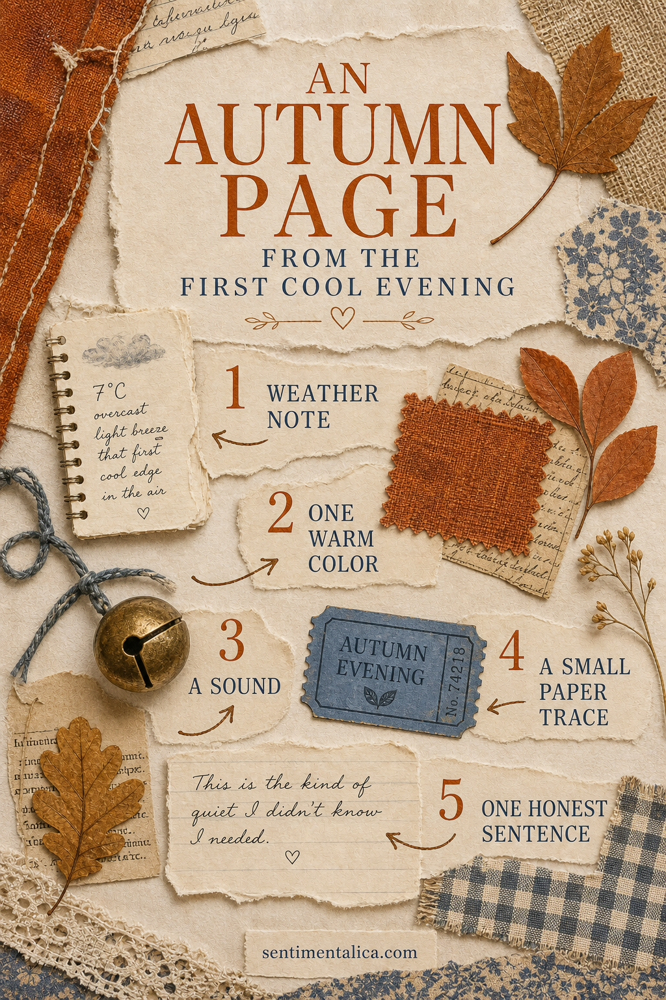
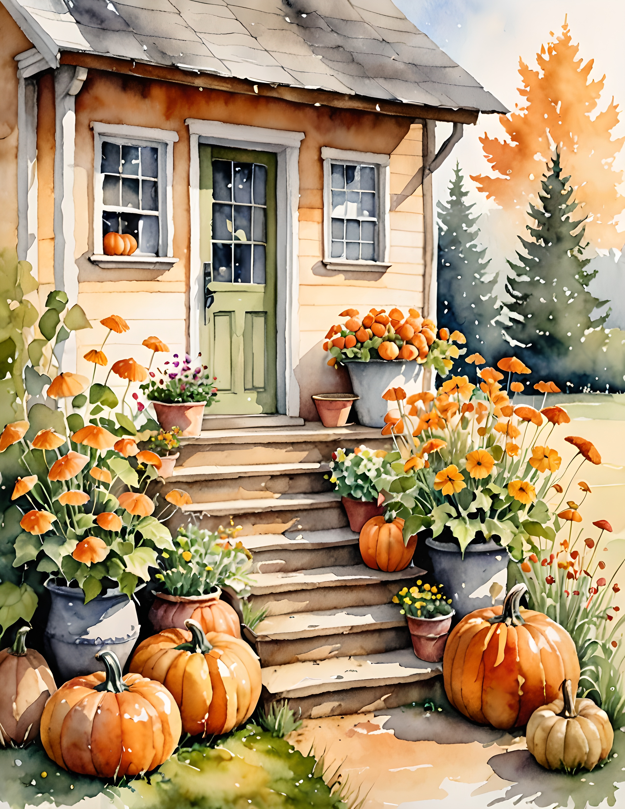

The first cool evening of the season is easy to miss. It rarely arrives with a grand event; it appears as a closed window, a cardigan found at the back of a chair or the first cup that feels warming instead of merely familiar. That makes it a perfect junk-journal subject.

Begin with five small traces
Write down the weather, but avoid a formal forecast. Record what the air actually felt like: “a cool edge after sunset” is more memorable than a temperature alone. Add one warm color you noticed, one sound, one small paper trace and one honest sentence.
The paper trace might be a tea wrapper, a receipt from an evening walk, a bus ticket or the label from a candle. It does not need to look important. Its value comes from belonging to that particular day.
Build the page around the sentence
Put your honest sentence near the lower third of the spread, where the eye naturally pauses. Keep it short enough to leave breathing room. Try: “Tonight I reached for the blue blanket,” or “The street sounded quieter after the rain.”
Choose a rust textile scrap or painted paper as the warm note. Add a cream writing fragment, then a faded blue ticket or label for contrast. A dried leaf can work, but a quick pencil outline of the leaf is flatter and kinder to the journal binding.

Let one sensory detail stay unexplained
Not every element needs a caption. A tiny bell can stand for the sound of a bicycle, a piece of checked fabric can recall the scarf you wore, and a dark thread can suggest the early evening sky. These visual shortcuts give the page emotional texture without turning it into a report.
Finish by writing the date in a small corner. Months later, the combination of weather, sound and ordinary paper will return the atmosphere more clearly than a long account written from memory.
Keep the page gentle
If the spread begins to feel crowded, remove one decorative piece before adding anything else. The first cool evening is a quiet threshold. The page should preserve that pause: summer loosening its hold, lamps switched on earlier and familiar rooms suddenly feeling softer.